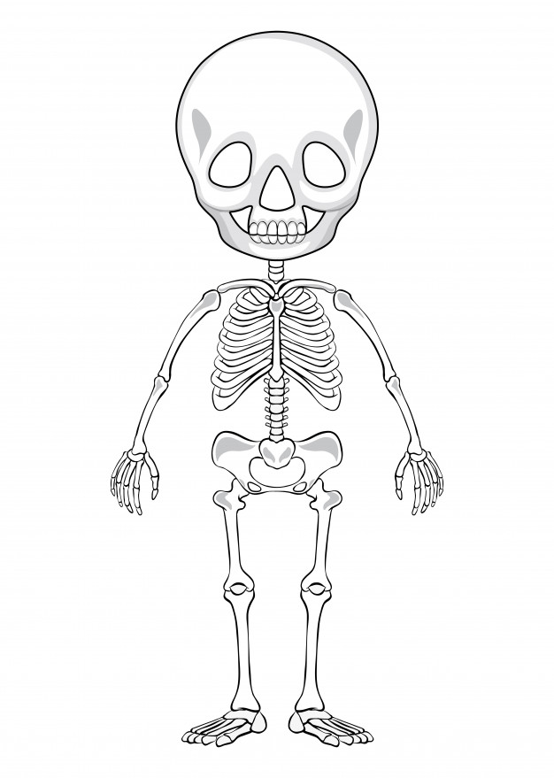

Datos Personales
Nombre y apellido: Lopez Lautaro Manuel
Edad: 27 años
Domicilio: Av. Rio de la Plata 666
Nacionalidad: Argentina
Documento: 41.920.974

Experiencia Laboral
- 2020 - 2021: Profesor en escuela parroquial en San Justo
- 2021 - 2022: Profesor de colonia en Fitness Club en Villa Luzuriaga
- 2022 - 2025: Participante en el grupo de Danzas en Educación Física en UNLAM
- 2023 - actualidad: Investigador en Grupo de Estudios Sociales y Educación Física UNLAM
- 2023 - actualidad: Investigador en Grupo de Investigación perteneciente al Centro de Estudios e investigaciones de Educación Física, CONICET en UNLP
- 2025 - 2026: Profesor Suplente en EES177, EES19, T8,
- 2026 - actualidad: Profesor Suplente en EGB 151, EGB12
Estudios
- Universidad:
- Egresado en la carrera de Educación Física UNLAM
- Egresado en la Licenciatura en Educación Física UNLAM
- Cursos:
- Actualización académica en inserción de la ESI en las prácticas educativas
- Actualización académica en Educación Sexual Integral
- Actualización académica en evaluación y enseñanza en la escuela inclusiva
- Secundario:
- Egresado del Colegio Secundario N° 63, Bachillerato Ciencias Sociales